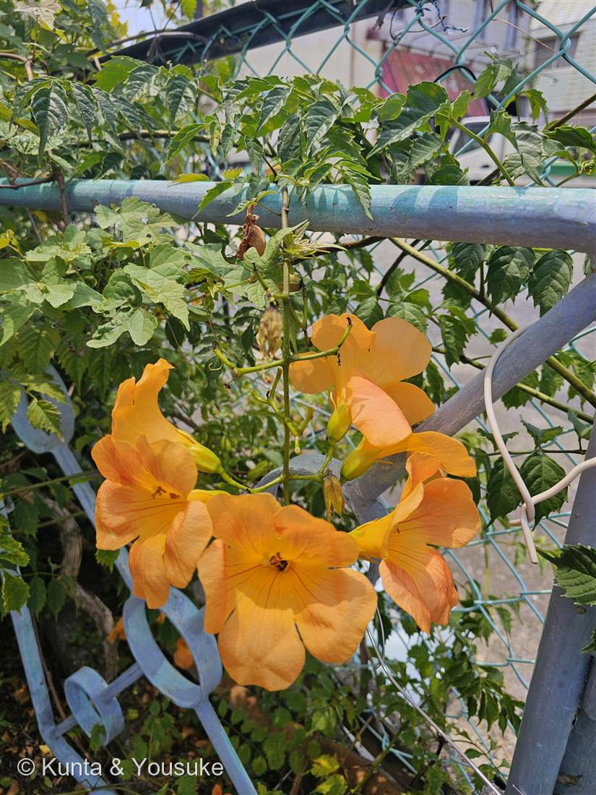
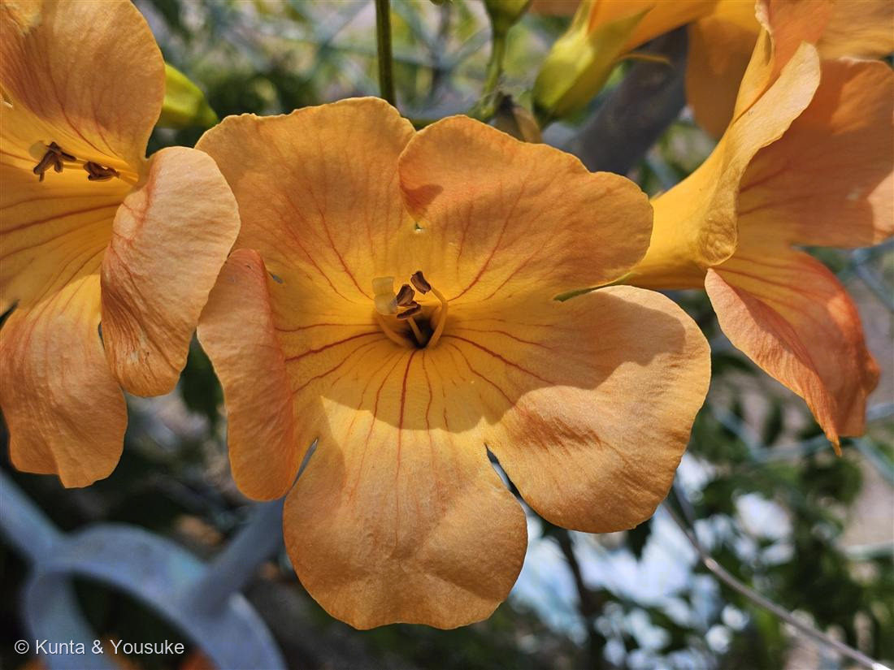
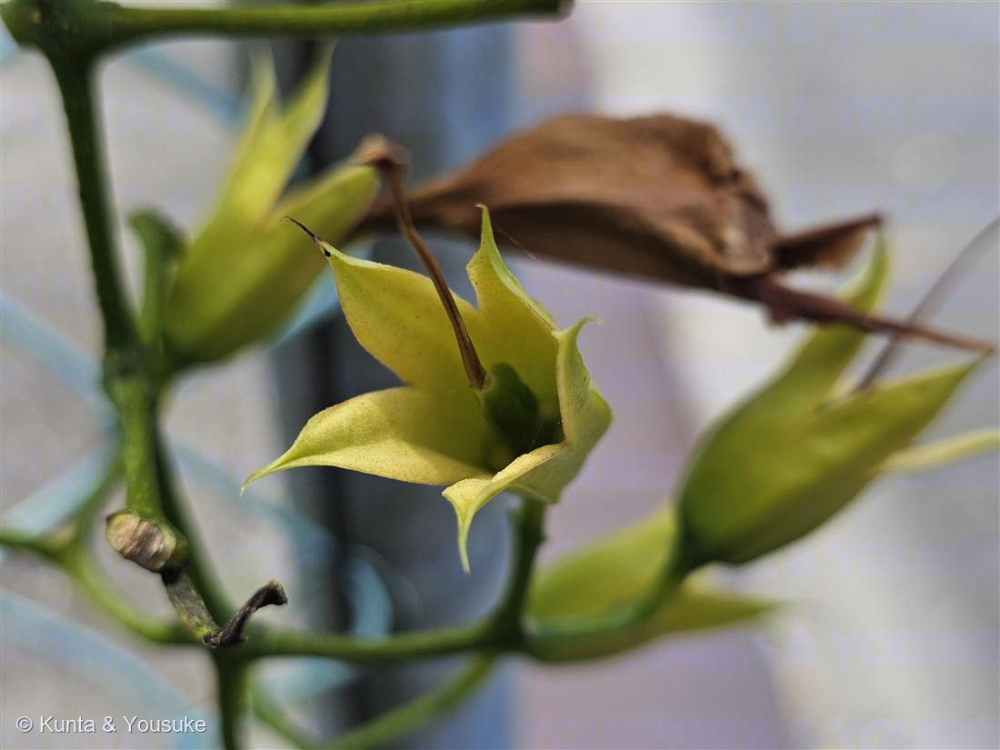

地図を読み込んでいるよ…
🔍 写真も地図も、押しているあいだ拡大して見られるよ（スマホは指を置いてすこし待ってね）。
🌍 の地図＝この子がもともと自生している場所を緑に。中国原産のつる性木本。日本へは西暦900年代（延喜年間・平安時代）に薬用として渡来し、以来ずっと庭木・薬用として植えられてきた。今では各地の民家の庭やフェンスで夏に咲く。
中国原産——日本へは平安時代（900年代）に薬用として渡来したけど、ここに塗ってあるのはふるさとの中国だけだよ。
⚠ 地図は国（日本と中国だけ県・省）までしか塗れないから、ほんとうの分布より広く見えていることがあるよ。地図はだいたいの場所。正確なところは、上の文を見てね。
ノウゼンカズラ（凌霄花）
Campsis grandiflora
別名 · 凌霄花（りょうしょうか）／ 原産 · 中国（平安時代に薬用として渡来）／ 花期 · 6〜8月の一日花／ ⭐気根で電柱や壁も登る
ノウゼンカズラ科 · Bignoniaceae（ノウゼンカズラ属 Campsis）── 図鑑で初めての科
燻太さんの見立て「民家横のフェンスに絡み付いていたこの子。ノウゼンカズラかな？オレンジ色の大きなお花ってすごい目立つよね。」──当たり。決め手は写真③の緑の萼だった。
名前と学名の由来 ── 「空を凌いで登る花」
- ⭐和名「ノウゼンカズラ（凌霄花）」の「凌霄（りょうしょう）」＝「霄（そら）を凌（しの）ぐ」＝ほかを押しのけて空を覆うほど高く登る、という中国名。もとは「リョウショウ」と読んでいたのが、だんだん変わって「ノウゼン」になった。「カズラ」は、つる植物ぜんぶを指すことば。──名前そのものが「高く登る」を言っている（燻太さんの「どうやって高いところまで登ったの？」に、名前が先に答えていた）。
- ⭐⭐属名 Campsis（カンプシス）は、ギリシャ語の kampsis（曲がる・湾曲）。──雄しべ（花糸）が弓なりに曲がっていることから。写真②の花の中心をよく見て。黄色い雄しべが、くるんと弓なりにカーブしているでしょう。あれが名前の由来なんだ。
- 種小名 grandiflora は「大きな花」（grandis 大きい ＋ flos/floris 花）＝この子の、あの大きなオレンジのラッパそのもの。
この植物のこと
- ノウゼンカズラ科ノウゼンカズラ属の、つる性の落葉木本（毎年枝を伸ばす木のつる）。図鑑で初めてのノウゼンカズラ科だよ。
- 中国原産。日本へは900年代（延喜年間・平安時代）に、薬用として渡来したとても古い付き合いの植物。以来ずっと、庭木や薬用として植えられてきた。
- 花期は6〜8月。ひとつひとつの花は一日花（朝ひらいて夕方には落ちる）だけど、次々に咲くから、夏じゅう長く楽しめる。地面に落ちたオレンジの花も、よく目立つ。
- ⭐生薬「凌霄花（りょうしょうか）」＝乾かした花・葉・根を、漢方で利尿や通経（月経をととのえる）に使う（植木ペディア）。──もともと薬として海をわたってきた子なんだね。
- ⭐おまけ植物は アメリカノウゼンカズラ（Campsis radicans）＝そっくりな兄弟。見つけたら、下の「同定について」の萼くらべをしてみよう。
同定について ── 決め手は「萼」だった
⭐⭐⭐ 燻太さんの「どうやってそこまで登ったの？」── 気根のひみつ
- 燻太さんの言葉：「電柱や高いところにある看板にもたまに絡み付いていて、どうやってそこまで登ったのって気になるよね。」
- ⭐⭐答え＝気根（きこん）。ノウゼンカズラは、つるの節から短い根っこ（気根・付着根）を出して、壁や柱やツルツルの面にペタッと張りついて登る（植木ペディア）。ツタ（キヅタ）が壁を登るのと同じしくみ。
- ⭐だから、巻きつくものが無いツルツルの電柱や看板にも、根っこで貼りついて、いつのまにか高いところまで登っていけるんだ。──名前の「凌霄（空を凌ぐ）」は、この登る力のことだったんだね。
⭐ 「花の水は目に毒」の言い伝え ── でも、ほんとうは
- 昔から、「花の中にたまった水にさわるとかぶれる／目に入ると失明する」という言い伝えがある。ちょっとこわい話だよね。
- ⭐⭐でも、はっきり調べると、この水に毒性はないと書かれている（植木ペディア）。──言い伝えは「言い伝え」で、実際には毒ではない。見た目のこわさと、正体がちがう子なんだ。
- ⚠それでも、お花はそっと見るだけにしようね。民家のフェンスの子だから、なおさら、ちぎったりしないで。
参考：植木ペディア「ノウゼンカズラ」（Campsis grandiflora・ノウゼンカズラ科・中国原産／日本へは900年代・延喜年間に薬用として渡来・蔓の節から気根を出して壁面や樹木に付着して登る・花期6〜8月・一日花・花にたまった水は「目に入ると失明」と言われるが毒性はない・漢方で乾した花・葉・根を利尿・通経に＝生薬「凌霄花」）／見分け：三河の植物観察「アメリカノウゼンカズラ」（萼が橙赤・浅い／細長いトランペット形＝ノウゼンカズラは萼が緑・深い／平たく開く）・NHK趣味の園芸「ノウゼンカズラ」